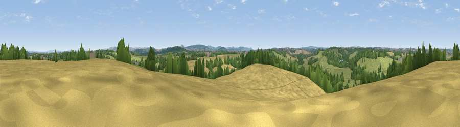

Viewpoint near Beckington
#28545 in England · top 50% of its area beats it · near BeckingtonWhere it is
The exact computed spot (ST 79225 50925). Click the marker for map links.
The view, rendered

A 360° render of this exact spot computed from the terrain model, tree cover and land cover — summer colours, afternoon light, calibrated against photographs of famous viewpoints. Real trees, hedges and buildings will differ in detail.
The panorama
Grey silhouette: terrain skyline in each direction (720 bearings, Earth curvature and refraction included). Dashed green: skyline with trees (+15 m) and buildings (+8 m) as obstacles. Blue strip: how far the ground is visible on each bearing.
Where the view opens
Wedge length = distance to the farthest visible ground on that bearing (vegetation-aware). Rings at 10, 25 and 50 km.
What fills the view
43% grassland · 36% cropland · 18% woodland · 3% built-up
Angular shares of the visible panorama (visual magnitude), not map area. Landscape diversity 0.50 (0–1 Shannon).
Key numbers
More beautiful places nearby
The staircase of upgrades: each row has a higher view potential than everything closer. Driving times are estimates from straight-line distance, calibrated against real road routing — check an actual route before setting out.
| Place | Direction | Drive | Score |
|---|---|---|---|
| Viewpoint near Spring Gardens | W · 2 km | ~6 min | 46.7 |
| Viewpoint near Dilton Marsh | ESE · 5 km | ~11 min | 50.9 |
| Little Cley Hill | SE · 7 km | ~15 min | 61.6 |
| Cley Hill | SE · 8 km | ~16 min | 76.8 |
| Viewpoint near Lamyatt | SW · 19 km | ~33 min | 77.8 |
| Beacon Batch | WNW · 31 km | ~49 min | 79.4 |
| Bleadon Hill [Loxton Hill] | W · 43 km | ~63 min | 79.6 |
| Viewpoint near Stinchcombe | N · 47 km | ~68 min | 80.5 |
51.25711, -2.29909 · source: screening · position refined by local search. Computed location — check access rights before visiting.